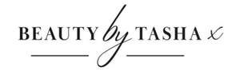

Trade Mark Journal No.2025/017 25 April 2025
UK00004186634 9 April 2025 (3,8,11,21,26,35,44)

- Class 3
- Beauty lotions; Beauty creams; Beauty care cosmetics; Beauty soap; Beauty gels; Beauty balm creams; Beauty creams for body care; Facial beauty masks; Beauty preparations for the hair; Beauty care preparations; Distilled oils for beauty care; Beauty tonics for application to the face; Beauty masks for hands; Beauty serums with anti-ageing properties; Beauty tonics for application to the body; Natural cosmetics; Body cleaning and beauty care preparations; Non-medicated beauty preparations; Natural makeup; Skincare cosmetics; Body care cosmetics; Natural perfumery; Body and facial creams [cosmetics]; Hair cosmetics; Cosmetics; Skin care cosmetics; Colour cosmetics; Facial creams [cosmetics]; Colour cosmetics for the skin; Hair care creams [for cosmetic use]; Anti-aging moisturizers used as cosmetics; Colour cosmetics for the eyes; Cosmetic products in the form of aerosols for skincare; Body creams [cosmetics]; Cosmetics for eye-lashes; Hair care lotions [for cosmetic use]; Natural oils for cosmetic purposes; Organic cosmetics; Cosmetic products in the form of aerosols for skin care; Cosmetics for suntanning; Facial makeup; Decorative cosmetics; Sun care lotions [for cosmetic use].
- Class 8
- Hand tools for use in beauty care.
- Class 11
- Hair steamers for use in beauty salons; Hair steamers for beauty salon use; Hair driers for use in beauty salons; Hair drying machines for beauty salon use.
- Class 21
- Cosmetic, hygiene and beauty care utensils.
- Class 26
- Bridal headpieces in the nature of ornamental hair combs.
- Class 35
- Marketing research in the fields of cosmetics, perfumery and beauty products; Retail services in relation to beauty implements for humans; Retail services in relation to beauty implements for animals; Online retail store services relating to cosmetic and beauty products; Wholesale services in relation to beauty implements for humans; Wholesale services in relation to beauty implements for animals; Commercial information and advice services for consumers in the field of beauty products.
- Class 44
- Beauty salons; Salons (Beauty -); Beauty care; Beauty treatment; Beauty salon services; Salon services (Beauty -); Beauty consultation; Beauty counselling; Beauty spa services; Beauty consultancy; Hygienic and beauty care; Services of a hair and beauty salon; Beauty care for animals; Beauty care of feet; Human hygiene and beauty care; Beauty care services; Beauty therapy services; Beauty treatment services; Hygienic and beauty care for animals; Hygienic and beauty care for humans; Facial beauty treatment services; Hygienic and beauty care services; Beauty salons for wig cutting; Beauty therapy treatments; Beauty care for human beings; Beauty treatment services especially for eyelashes; Beauty consultation services; Hygienic and beauty care for human beings; Beauty information services; Consultancy in the field of body and beauty care; Beauty advisory services; Beauty consultancy services; Rental of equipment for human hygiene and beauty care; Beauty care services provided by a health spa; Provision of hygienic and beauty care services; Information relating to beauty care; Information relating to beauty; Advisory services relating to beauty care; Consultation services relating to beauty care; Advisory services relating to beauty; Consultancy services relating to beauty; Providing information relating to beauty salon services; Advisory services relating to beauty treatment; Providing information about beauty; Consultancy provided via the Internet in the field of body and beauty care; Rental of machines and apparatus for use in beauty salons or barbers' shops; Cosmetic make-up services; Skin care salons; Hair salon services for women; Skin care salon services; Cosmetic treatment services for the body, face and hair.
Natasha Ahmed